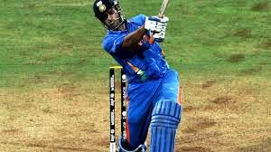
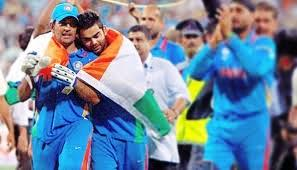
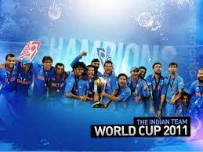
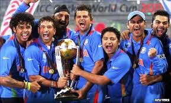
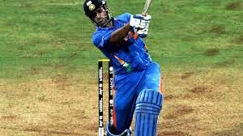
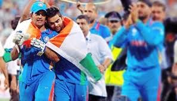
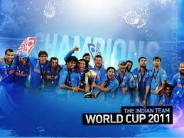
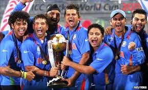

Under Dhoni's captaincy, India won the 2011 World Cup. In the final against Sri Lanka, chasing 275, Dhoni promoted himself up the batting order, coming before an in-form Yuvraj Singh. When he came to bat, India needed more than six runs per over with three top order batsmen already dismissed. He started building a good partnership with Gautam Gambhir. Due to good strokeplay and active running between wickets, they kept up with the required run rate. Dhoni was on 60 off 60 balls but later accelerated with a greater frequency of boundaries, ending with 91 not out off 79 balls. Befitting the occasion, he finished the match off in style with a huge six over long-on off bowler Nuwan Kulasekara and won the Man of the Match award. Later in the post-match presentation, he admitted that he came up the order so as to counter the Muralitharan spin threat, as he was very familiar with Murali's bowling, who was his teammate in the Indian Premier League (IPL) franchise Chennai Super Kings. He had come after the dismissal of Virat Kohli, also a right-handed batsman. By partnering the left-handed Gambhir, he ensured a right-left combination at the crease that makes it difficult for bowlers to settle into a rhythm. The bat used by Dhoni in the final match was sold for 72 Lac. The money goes to Sakshi Rawat Foundation, operated by Dhoni's wife Sakshi Rawat to help orphan children.
    
   